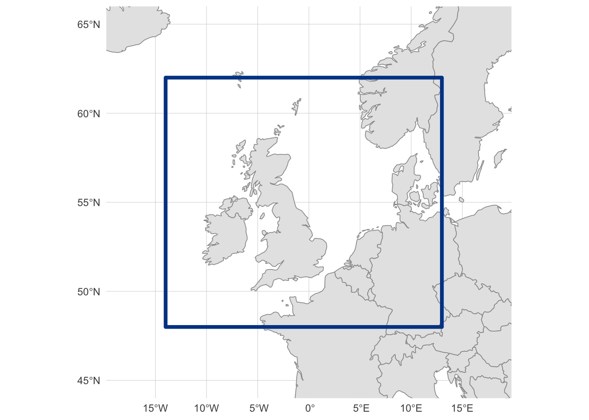
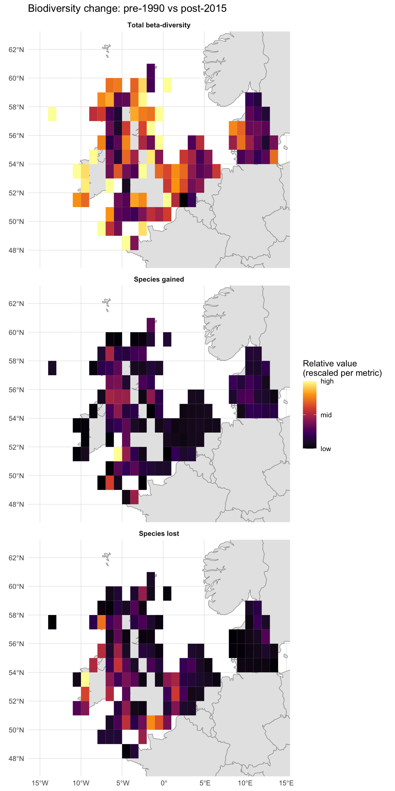
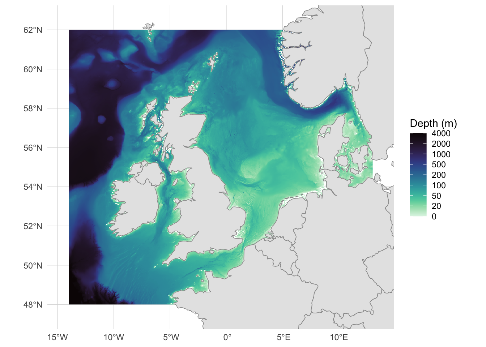
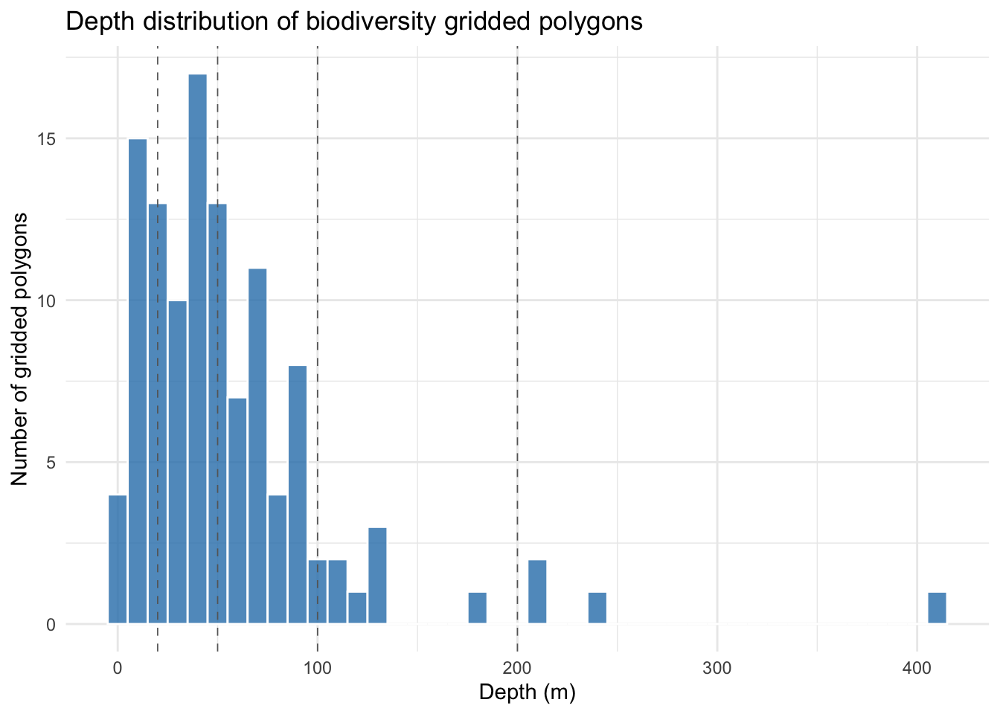
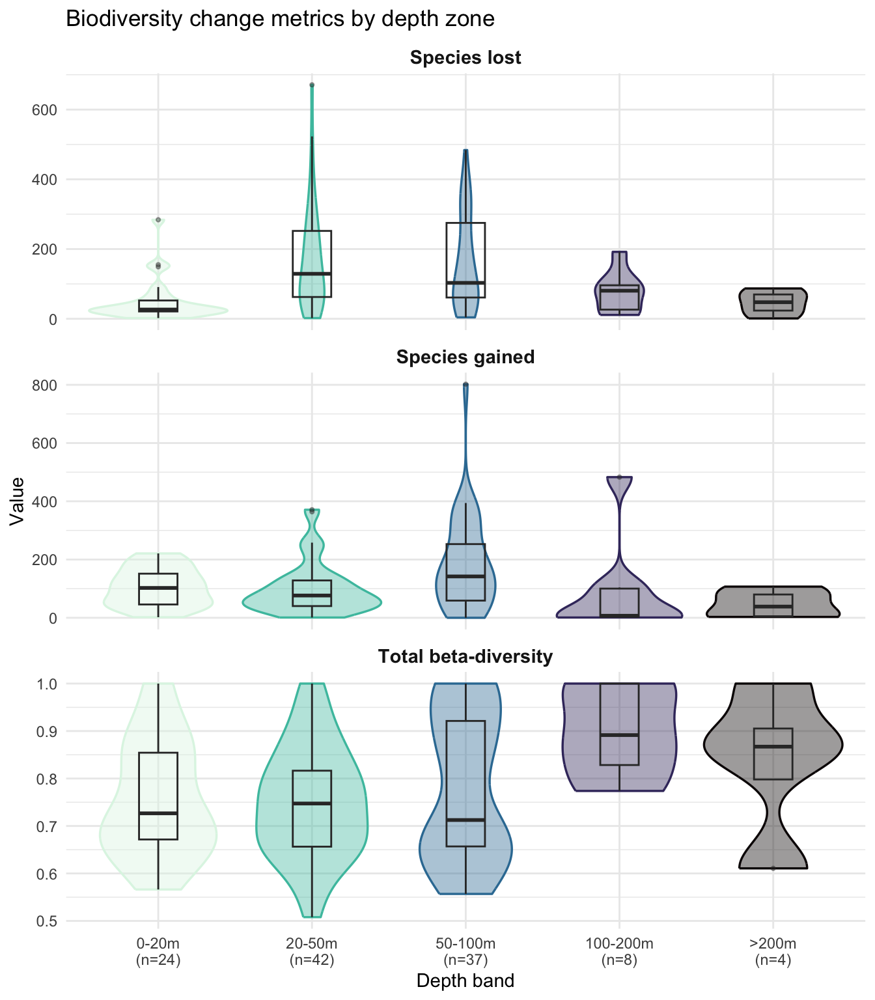
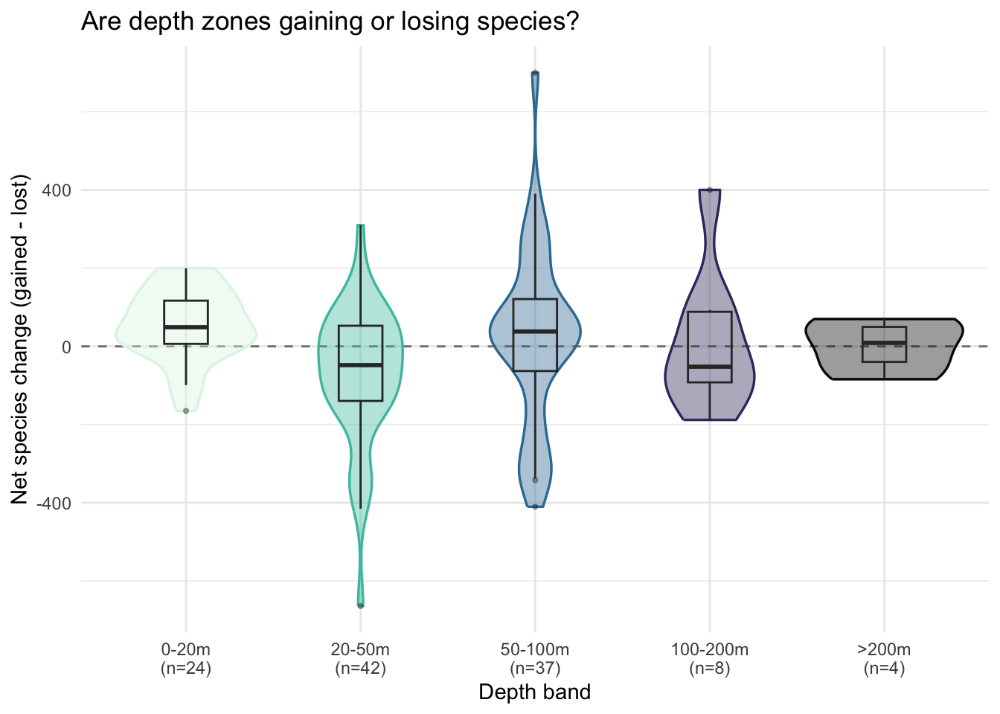
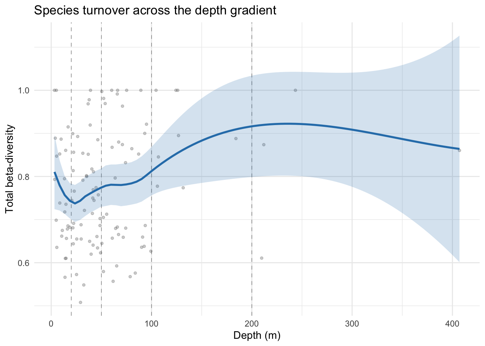
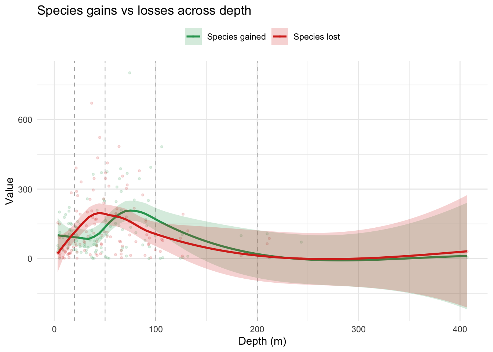

3: Biodiversity Change and Depth
Relating Marine Biodiversity Change to Depth on the North-West (NW) European Shelf
Introduction
Marine biodiversity is not static. Species distributions shift over time in response to environmental change, and the resulting patterns of species loss and gain vary across habitats and conditions. A central question in marine ecology is: where are communities changing most, and what environmental factors are associated with that change?
Water depth is one of the strongest environmental gradients in the ocean, shaping light availability, temperature, pressure, and food supply. Shallow coastal waters, the continental shelf, and the deep sea support fundamentally different communities. If depth influences community stability, we might expect to see different rates of species turnover across depth zones: perhaps shallow communities exposed to warming and human activity are changing faster, or perhaps deep-sea communities with narrow environmental tolerances are more sensitive to perturbation.
In this tutorial, we combine two types of EMODnet data to investigate this question across the NW European shelf:
- Vector data from EMODnet Biology: gridded metrics of biodiversity change between time periods (species gained, species lost, overall turnover)
- Raster data from EMODnet Bathymetry: a continuous surface of mean water depth
By extracting depth values at each biodiversity grid cell and examining how species turnover varies across the depth gradient, we can begin to characterize which depth zones are experiencing the most change.
This tutorial bridges the WFS techniques from Tutorial 1 and the WCS techniques from Tutorial 2, combining vector and raster data in a single analysis. It introduces a key spatial operation not covered in previous tutorials: polygon-based raster extraction, where we compute mean raster values within each polygon feature.
Learning Objectives
By the end of this tutorial, you will be able to:
- Discover and retrieve biodiversity change metrics from EMODnet Biology WFS
- Discover and retrieve bathymetry raster data from EMODnet Bathymetry WCS
- Extract mean raster values within polygon features using
terra::extract() - Create depth bands from continuous depth values for categorical analysis
- Visualise and interpret patterns of species turnover across depth gradients
Data Sources
WFS (Vector Data):
| Layer | Service | Description |
|---|---|---|
all_diversity_measures |
biology | Gridded biodiversity change metrics comparing species composition between time periods |
WCS (Raster Data):
| Coverage | Service | Description |
|---|---|---|
emodnet__mean |
bathymetry | Mean water depth (m), regularly gridded |
Setup
Packages
We use emodnet.wfs for WFS vector data, emodnet.wcs for WCS raster data, terra for raster operations, sf for spatial data handling, dplyr and tidyr for data wrangling, ggplot2 with tidyterra for static visualisation, and tmap for interactive maps.
If you haven’t installed these packages, run:
install.packages(c(
"emodnet.wfs", "terra", "sf", "dplyr", "tidyr",
"ggplot2", "tidyterra", "tmap", "rnaturalearth"
))For the EMODnet WCS package (development version from GitHub):
# install.packages("pak")
pak::pak("EMODnet/emodnet.wcs")Study Area
We focus on the NW European shelf, covering the British Isles, North Sea, and surrounding waters. This region has good coverage from the EMODnet Biology diversity products:

Exploring EMODnet Biology WFS
Before downloading any data, we need to discover what the EMODnet Biology WFS offers and understand the structure of the diversity layer.
Discovering Available Services
In Tutorial 1, we used emodnet_wfs() to list all available WFS services. Here we connect directly to the Biology service, which hosts species occurrence data and derived products like biodiversity change metrics:
bio_wfs <- emodnet_init_wfs_client(service = "biology")Discovering Available Layers
What layers does the Biology WFS provide? We use emodnet_get_wfs_info() to retrieve the full catalogue:
bio_layers <- emodnet_get_wfs_info(bio_wfs)
nrow(bio_layers)
#> [1] 39The Biology service catalogue is large, so rather than print every layer, we filter to those whose name or title mentions diversity, which is the family of products this tutorial is about:
| layer_name | title |
|---|---|
| all_diversity_measures | Temporal Turnover in European Macrobenthos Communities |
We are interested in all_diversity_measures, which contains gridded biodiversity change metrics. Before exploring its structure, let’s read the layer’s own abstract for the canonical description of what it contains:
This product builds on the EMODnet Biology data product Presence/absence data of macrozoobenthos in the European Seas to derive estimates of temporal turnover in benthic communities on a spatial grid across European seas. This product only uses species-level records, and only uses sampling events where the full macrobenthic community was surveyed (i.e. where there are no ‘NA’ values in the presence/absence dataset for any species). Six time periods are considered, based on data availability: before 1990, 1990-1999, 2000-2004, 2005-2009, 2010-2014, and 2015 and after. A 1 degree grid is used to obtain reasonable numbers of repeat samples per grid cell. The code below could be adapted to set different time periods and/or a different grid resolution. This readme describes the product structure, including the workflow to generate the required derived datasets and the process for turning them into gridded maps of community turnover.
Understanding the Diversity Layer
What attributes does this layer contain? We use layer_attribute_descriptions() to inspect the schema without downloading any data:
diversity_attrs <- layer_attribute_descriptions(
wfs = bio_wfs,
layer = "all_diversity_measures"
)
diversity_attrsThe layer is organised in long format: each grid cell contributes one row per metric, with the metric name stored in the var column and its numeric value in value. So the same spatial feature appears multiple times, once per metric. To see what metrics are available, we inspect the var attribute using layer_attribute_inspect():
# What diversity variables are available?
layer_attribute_inspect(
wfs = bio_wfs,
layer = "all_diversity_measures",
attribute = "var"
)The layer contains a Baselga decomposition of beta-diversity (Baselga 2010), computed via the BAT R package (Cardoso et al. 2015). Beta diversity quantifies differences in species composition between communities or, as in this case, between time periods at the same location. The decomposition splits total compositional change into two components, beta_total = beta_repl + beta_rich_beta_repl, each bounded 0-1. The “replacement” component (beta_repl) captures species turnover, that is, species being replaced by others, rather than simple gains or losses due to changes in sampling effort. This makes it a more robust measure of ecological change than raw species richness differences. Alongside these decomposed metrics the layer also includes raw species counts (sp_*) and their proportions (p_sp_*).
The metrics are derived from EMODnet Biology occurrence records, aggregated to a regular grid and compared across pairs of six time windows (pre-1990, 1990-1999, 2000-2004, 2005-2009, 2010-2014, 2015+). Full definitions and methodology are documented in the EMODnet-Biology-benthos-trends product repository and the EMODnet Biology Geonetwork metadata record.
In this tutorial, we focus on three of these metrics as illustrative indicators of community change between two periods:
-
sp_lost_beta_repl: count of species present in the earlier period but absent in the later one -
sp_gained_beta_repl: count of species absent in the earlier period but present in the later one -
beta_total: overall compositional dissimilarity between the two periods, bounded 0-1 and combining both replacement and richness-difference components. A value near 0 means the two time windows share essentially the same set of species in a given grid cell (the community has been stable), while a value near 1 means almost no species are shared between the two periods (the community has been effectively replaced). Intermediate values indicate partial overlap
# What time periods are compared?
layer_attribute_inspect(
wfs = bio_wfs,
layer = "all_diversity_measures",
attribute = "period_verbose"
)Each record represents a comparison between two time periods. The period_verbose attribute contains human-readable labels like pre1990_v_post2015. We want the comparison that captures the longest-term change to maximise the signal of biodiversity shifts.
Planning the Download
Now that we understand the layer structure, we can plan what to download. We need:
- Spatial filter: Our NW European shelf bounding box
- Attribute filter - Time period: A specific time period comparison
-
Attribute filter - Metrics:
sp_lost_beta_repl,sp_gained_beta_repl, andbeta_total
First, let’s identify the geometry column name for the CQL bounding box filter:
diversity_geom_col <- diversity_attrs$name[diversity_attrs$geometry]
diversity_geom_col
#> [1] "the_geom"Now we build the CQL filter. We combine a spatial BBOX filter with two attribute filters: one to select the time period we want, and one to restrict the download to only the three metrics we’ll use (recall that the layer is in long format, so each grid cell contributes one row per metric). For CQL syntax details, see Tutorial 1:
# Spatial filter: bounding box
bbox_filter <- sprintf(
"BBOX(%s, %s, %s, %s, %s, 'EPSG:4326')",
diversity_geom_col,
study_bbox["xmin"],
study_bbox["ymin"],
study_bbox["xmax"],
study_bbox["ymax"]
)
# Attribute filter: select a specific time period
period_filter <- "period_verbose = 'pre1990_v_post2015'"
# Attribute filter: select only the metrics we use
var_filter <- "var IN ('sp_lost_beta_repl','sp_gained_beta_repl','beta_total')"
# Combine spatial and attribute filters
diversity_cql_filter <- paste(
bbox_filter,
period_filter,
var_filter,
sep = " AND "
)
diversity_cql_filter
#> [1] "BBOX(the_geom, -14, 48, 13, 62, 'EPSG:4326') AND period_verbose = 'pre1990_v_post2015' AND var IN ('sp_lost_beta_repl','sp_gained_beta_repl','beta_total')"We could download all data and filter locally, but the all_diversity_measures layer contains records for multiple time periods and metrics across all of European seas. Filtering server-side with CQL reduces the download size substantially and avoids transferring data we won’t use. Because the layer is in long format, restricting var to just the metrics we need cuts the row count by nearly a factor of three on top of the bbox and period filters.
Downloading Biodiversity Data
We download the filtered data using emodnet_get_layers() and set simplify = TRUE to return a single sf data frame rather than a named list (see Tutorial 1 for details):
diversity_raw <- emodnet_get_layers(
wfs = bio_wfs,
layers = "all_diversity_measures",
cql_filter = diversity_cql_filter,
simplify = TRUE
)
nrow(diversity_raw)
#> [1] 345Inspecting Downloaded Data
Let’s preview the data:
| gml_id | var | period | period_verbose | longitude | latitude | value | the_geom |
|---|---|---|---|---|---|---|---|
| all_diversity_measures.fid-740f1eb2_19dafaf57fd_-7780 | beta_total | 5 | pre1990_v_post2015 | 3.5 | 55.5 | 0.6407767 | POLYGON ((3 55, 3 56, 4 56,… |
| all_diversity_measures.fid-740f1eb2_19dafaf57fd_-777f | beta_total | 5 | pre1990_v_post2015 | 10.5 | 57.5 | 0.6607143 | POLYGON ((10 57, 10 58, 11 … |
| all_diversity_measures.fid-740f1eb2_19dafaf57fd_-777e | beta_total | 5 | pre1990_v_post2015 | -0.5 | 53.5 | 0.8522727 | POLYGON ((-1 53, -1 54, 0 5… |
| all_diversity_measures.fid-740f1eb2_19dafaf57fd_-777d | beta_total | 5 | pre1990_v_post2015 | 4.5 | 53.5 | 0.6550000 | POLYGON ((4 53, 4 54, 5 54,… |
| all_diversity_measures.fid-740f1eb2_19dafaf57fd_-777c | beta_total | 5 | pre1990_v_post2015 | 12.5 | 55.5 | 0.5661765 | POLYGON ((12 55, 12 56, 13 … |
| all_diversity_measures.fid-740f1eb2_19dafaf57fd_-777b | beta_total | 5 | pre1990_v_post2015 | 5.5 | 54.5 | 0.7142857 | POLYGON ((5 54, 5 55, 6 55,… |
| all_diversity_measures.fid-740f1eb2_19dafaf57fd_-777a | beta_total | 5 | pre1990_v_post2015 | -6.5 | 54.5 | 0.6986028 | POLYGON ((-7 54, -7 55, -6 … |
| all_diversity_measures.fid-740f1eb2_19dafaf57fd_-7779 | beta_total | 5 | pre1990_v_post2015 | -2.5 | 51.5 | 0.8888889 | POLYGON ((-3 51, -3 52, -2 … |
| all_diversity_measures.fid-740f1eb2_19dafaf57fd_-7778 | beta_total | 5 | pre1990_v_post2015 | -5.5 | 55.5 | 0.6589817 | POLYGON ((-6 55, -6 56, -5 … |
| all_diversity_measures.fid-740f1eb2_19dafaf57fd_-7777 | beta_total | 5 | pre1990_v_post2015 | -2.5 | 58.5 | 0.9913793 | POLYGON ((-3 58, -3 59, -2 … |
Each row represents a grid cell polygon with a single biodiversity variable (var) and its value for the selected time period comparison. The geometry column contains polygon boundaries for each 1-degree grid cell.
Let’s check which variables we received and their value ranges:
Quick Visualisation
Before restructuring the data, the long format makes it easy to map all three metrics side by side: we just facet on var. The metrics have very different ranges (beta_total is bounded 0-1, whereas sp_lost_beta_repl and sp_gained_beta_repl are raw species counts that can reach several hundred), so a single shared fill scale would flatten the bounded metric to nearly one colour. We rescale values within each metric to 0-1 so that the spatial pattern is visible for each, keeping in mind that absolute values are not comparable across panels:
Code
diversity_plot <- diversity_raw |>
group_by(var) |>
mutate(value_rescaled = scales::rescale(value)) |>
ungroup() |>
mutate(
metric = case_match(
var,
"beta_total" ~ "Total beta-diversity",
"sp_gained_beta_repl" ~ "Species gained",
"sp_lost_beta_repl" ~ "Species lost"
),
metric = factor(
metric,
levels = c("Total beta-diversity", "Species gained", "Species lost")
)
)
ggplot() +
geom_sf(data = europe, fill = "gray90", color = "gray60", linewidth = 0.3) +
geom_sf(
data = diversity_plot,
aes(fill = value_rescaled),
color = NA
) +
scale_fill_viridis_c(
option = "inferno",
name = "Relative value\n(rescaled per metric)",
breaks = c(0, 0.5, 1),
labels = c("low", "mid", "high")
) +
facet_wrap(~metric, ncol = 1) +
coord_sf(
xlim = c(study_bbox["xmin"] - 1, study_bbox["xmax"] + 1),
ylim = c(study_bbox["ymin"] - 0.5, study_bbox["ymax"] + 0.5)
) +
labs(
x = NULL,
y = NULL,
title = "Biodiversity change: pre-1990 vs post-2015"
) +
theme_minimal() +
theme(
panel.grid = element_line(color = "gray85", linewidth = 0.2),
strip.text = element_text(face = "bold")
)
All three panels show clear spatial structure rather than noise, but they do not tell the same story. The Total beta-diversity panel is broadly lit up: most cells rank in the upper half of their own 0-1 range, meaning some degree of compositional change has happened almost everywhere on the shelf. The Species gained and Species lost panels are much sparser: most cells sit at the low end of their own range, with only a handful of bright cells marking where the absolute counts are largest, and those bright cells sit in different places between the two panels. The takeaway is that proportional compositional change is widespread, but cells with the biggest raw counts of gains or losses are localised and only partly overlap.
You may notice that some grid cells visibly overlap land. This is not a plotting artifact: the upstream product builds a regular 1° raster over the study area and tags any cell that contains at least one occurrence record, with no clipping to the coastline. At ~111 km cells, coastal squares whose footprints straddle peninsulas, islands and inlets are kept whole. The biodiversity values still describe the marine occurrences in those cells, but interpret them as “this 1° square that happens to touch the coast” rather than as land statistics.
What drives these patterns? Let’s bring in depth data to investigate.
Restructuring for Analysis
The data arrives in long format (one row per grid cell per variable). For the depth analysis that follows, it’s more convenient to have each variable as its own column, with one row per grid cell. We pivot wider using the longitude and latitude columns to group rows belonging to the same cell:
# Keep one geometry per grid cell
cell_geom <- diversity_raw |>
distinct(longitude, latitude, .keep_all = TRUE) |>
select(longitude, latitude)
# Pivot to wide format (drops geometry)
diversity_wide <- diversity_raw |>
st_drop_geometry() |>
pivot_wider(
id_cols = c(longitude, latitude),
names_from = var,
values_from = value
)
# Rejoin geometry. Keeping the sf object (cell_geom) on the left means
# left_join.sf dispatches and the result stays an sf object.
diversity <- cell_geom |>
left_join(diversity_wide, by = c("longitude", "latitude"))
nrow(diversity)
#> [1] 115diversity |>
head(10)Each row now represents a single grid cell with columns for each beta-diversity metric.
Exploring EMODnet Bathymetry WCS
To relate biodiversity change to depth, we need a bathymetric surface. EMODnet Bathymetry provides gridded depth data through a Web Coverage Service (WCS) which we access through package emodnet.wcs. For an introduction to working with the emodnet.wcs package, see Tutorial 2.
Connecting to the Service
bathy_wcs <- emdn_init_wcs_client(service = "bathymetry")Discovering Available Coverages
What coverages does the Bathymetry WCS provide?
bathy_coverage_ids <- emdn_get_coverage_ids(bathy_wcs)
bathy_coverage_ids
#> [1] "emodnet__mean" "emodnet__mean_2016"
#> [3] "emodnet__mean_2018" "emodnet__mean_2020"
#> [5] "emodnet__mean_2022" "emodnet__mean_atlas_land"
#> [7] "emodnet__mean_multicolour" "emodnet__mean_rainbowcolour"The coverage IDs encode the product type and reference year. Some are depth data products (plain emodnet__mean and year-suffixed versions like emodnet__mean_2022), while others are visualisation products (multicolour, rainbowcolour, atlas_land). The year-suffixed coverages represent specific data releases. Let’s get metadata for the depth coverages:
# Filter for mean depth coverages (year-suffixed releases)
depth_coverages <- bathy_coverage_ids[grepl(
"^emodnet__mean(_\\d{4})?$",
bathy_coverage_ids
)]
depth_coverages
#> [1] "emodnet__mean" "emodnet__mean_2016" "emodnet__mean_2018"
#> [4] "emodnet__mean_2020" "emodnet__mean_2022"
bathy_info <- emdn_get_coverage_info(
wcs = bathy_wcs,
coverage_ids = depth_coverages
)
bathy_infoWe select the most recent year-specific release. The metadata shows the spatial resolution, extent, and CRS. Let’s examine the coverage properties in more detail:
# Use the most recent dated release
bathy_coverage_id <- tail(depth_coverages, 1)
bathy_coverage_id
#> [1] "emodnet__mean_2022"bathy_summary <- emdn_get_coverage_summaries(
bathy_wcs,
bathy_coverage_id
)[[1]]
# Spatial resolution
emdn_get_resolution(bathy_summary)
#> x y
#> 0.001041667 0.001041667
#> attr(,"uom")
#> [1] "Deg" "Deg"
# Geographic extent
emdn_get_WGS84bbox(bathy_summary)
#> xmin ymin xmax ymax
#> -70.5 11.0 43.0 90.0The bathymetry data covers a large area at high resolution. Our bounding box will subset it to just our NW European shelf study area.
With WFS (vector data), the server returns complete features (points, polygons) that fall within the bounding box. With WCS (raster data), the server clips the raster grid to the requested bounding box and returns only those cells. This means WCS requests are inherently spatial subsets: you always get exactly the area you ask for, with no need for post-download cropping.
Downloading Bathymetry
We download the bathymetry raster for our study area using emdn_get_coverage(). The bbox argument takes a named numeric vector in WGS84 coordinates.
Because the bathymetry data is very high resolution (~0.001°, so roughly one million cells per square degree), a single request for the full study area would return a raster on the order of a gigabyte, which exceeds the server’s per-request limit. EMODnet WCS doesn’t publish an exact byte cap, so tile sizing is empirical: we chose a 6x5 grid of tiles because it keeps each tile to ~5 square degrees (~50 MB uncompressed) and comfortably under the limit. If you hit a server error with fewer tiles, split more finely; if tiles are very small, consolidate.
The download proceeds in three steps:
-
Define the tile boundaries. We split the study bounding box into
n_xcolumns andn_yrows. To definenintervals along an axis we needn + 1break points, hencelength.out = n_x + 1andlength.out = n_y + 1. -
Build a table of tile indices.
expand_grid()enumerates every (column, row) combination, giving us one row per tile to iterate over. -
Download each tile.
purrr::pmap()walks the table row by row, building each tile’s bounding box from the relevant break points and callingemdn_get_coverage(). The result is a list ofSpatRastertiles in the same order as the table, which we then stitch together withterra::merge().
# Split the study bbox into a 6 x 5 grid of tiles (30 tiles total).
# n tiles in a dimension need n + 1 break points to bound the n intervals.
n_x <- 6
n_y <- 5
x_breaks <- seq(study_bbox["xmin"], study_bbox["xmax"], length.out = n_x + 1)
y_breaks <- seq(study_bbox["ymin"], study_bbox["ymax"], length.out = n_y + 1)
# One row per tile, with column / row indices into x_breaks / y_breaks.
tile_grid <- expand_grid(
i = seq_len(n_x),
j = seq_len(n_y)
)
# Download each tile in turn, returning a list of SpatRasters.
tiles <- purrr::pmap(
tile_grid,
\(i, j) emdn_get_coverage(
wcs = bathy_wcs,
coverage_id = bathy_coverage_id,
bbox = c(
xmin = x_breaks[i],
ymin = y_breaks[j],
xmax = x_breaks[i + 1],
ymax = y_breaks[j + 1]
)
)
)
#> <GMLEnvelope>
#> ....|-- lowerCorner: 48 -14
#> ....|-- upperCorner: 50.8 -9.5
#> <GMLEnvelope>
#> ....|-- lowerCorner: 50.8 -14
#> ....|-- upperCorner: 53.6 -9.5
#> <GMLEnvelope>
#> ....|-- lowerCorner: 53.6 -14
#> ....|-- upperCorner: 56.4 -9.5
#> <GMLEnvelope>
#> ....|-- lowerCorner: 56.4 -14
#> ....|-- upperCorner: 59.2 -9.5
#> <GMLEnvelope>
#> ....|-- lowerCorner: 59.2 -14
#> ....|-- upperCorner: 62 -9.5
#> <GMLEnvelope>
#> ....|-- lowerCorner: 48 -9.5
#> ....|-- upperCorner: 50.8 -5
#> <GMLEnvelope>
#> ....|-- lowerCorner: 50.8 -9.5
#> ....|-- upperCorner: 53.6 -5
#> <GMLEnvelope>
#> ....|-- lowerCorner: 53.6 -9.5
#> ....|-- upperCorner: 56.4 -5
#> <GMLEnvelope>
#> ....|-- lowerCorner: 56.4 -9.5
#> ....|-- upperCorner: 59.2 -5
#> <GMLEnvelope>
#> ....|-- lowerCorner: 59.2 -9.5
#> ....|-- upperCorner: 62 -5
#> <GMLEnvelope>
#> ....|-- lowerCorner: 48 -5
#> ....|-- upperCorner: 50.8 -0.5
#> <GMLEnvelope>
#> ....|-- lowerCorner: 50.8 -5
#> ....|-- upperCorner: 53.6 -0.5
#> <GMLEnvelope>
#> ....|-- lowerCorner: 53.6 -5
#> ....|-- upperCorner: 56.4 -0.5
#> <GMLEnvelope>
#> ....|-- lowerCorner: 56.4 -5
#> ....|-- upperCorner: 59.2 -0.5
#> <GMLEnvelope>
#> ....|-- lowerCorner: 59.2 -5
#> ....|-- upperCorner: 62 -0.5
#> <GMLEnvelope>
#> ....|-- lowerCorner: 48 -0.5
#> ....|-- upperCorner: 50.8 4
#> <GMLEnvelope>
#> ....|-- lowerCorner: 50.8 -0.5
#> ....|-- upperCorner: 53.6 4
#> <GMLEnvelope>
#> ....|-- lowerCorner: 53.6 -0.5
#> ....|-- upperCorner: 56.4 4
#> <GMLEnvelope>
#> ....|-- lowerCorner: 56.4 -0.5
#> ....|-- upperCorner: 59.2 4
#> <GMLEnvelope>
#> ....|-- lowerCorner: 59.2 -0.5
#> ....|-- upperCorner: 62 4
#> <GMLEnvelope>
#> ....|-- lowerCorner: 48 4
#> ....|-- upperCorner: 50.8 8.5
#> <GMLEnvelope>
#> ....|-- lowerCorner: 50.8 4
#> ....|-- upperCorner: 53.6 8.5
#> <GMLEnvelope>
#> ....|-- lowerCorner: 53.6 4
#> ....|-- upperCorner: 56.4 8.5
#> <GMLEnvelope>
#> ....|-- lowerCorner: 56.4 4
#> ....|-- upperCorner: 59.2 8.5
#> <GMLEnvelope>
#> ....|-- lowerCorner: 59.2 4
#> ....|-- upperCorner: 62 8.5
#> <GMLEnvelope>
#> ....|-- lowerCorner: 48 8.5
#> ....|-- upperCorner: 50.8 13
#> <GMLEnvelope>
#> ....|-- lowerCorner: 50.8 8.5
#> ....|-- upperCorner: 53.6 13
#> <GMLEnvelope>
#> ....|-- lowerCorner: 53.6 8.5
#> ....|-- upperCorner: 56.4 13
#> <GMLEnvelope>
#> ....|-- lowerCorner: 56.4 8.5
#> ....|-- upperCorner: 59.2 13
#> <GMLEnvelope>
#> ....|-- lowerCorner: 59.2 8.5
#> ....|-- upperCorner: 62 13
# Merge tiles into a single raster
bathymetry <- do.call(merge, tiles)
#>
|---------|---------|---------|---------|
=========================================
bathymetry
#> class : SpatRaster
#> size : 13440, 25920, 1 (nrow, ncol, nlyr)
#> resolution : 0.001041667, 0.001041667 (x, y)
#> extent : -14, 13, 48, 62 (xmin, xmax, ymin, ymax)
#> coord. ref. : lon/lat WGS 84 (EPSG:4326)
#> source : spat_11eb357cdfd25_73395_SskviV5XwhZb4QV.tif
#> varname : emodnet__mean_2022_48,-14,50.8,-9.5
#> name : emodnet__mean_2022_48,-14,50.8,-9.5_depth
#> min value : -4773.924
#> max value : 2462.781EMODnet WCS services impose a maximum download size per request. When your study area is too large for the raster resolution, you can split it into tiles, download each separately, and merge them with terra::merge(). The tiles share the same resolution and CRS (they come from the same coverage), so merging is seamless. The number of tiles you need depends on the area and resolution: here, 30 tiles (6x5 grid) keeps each request well under the limit.
Inspecting and Processing Depth Values
EMODnet bathymetry uses the convention of negative values for depth below sea level and positive values for elevation above it. Since our bounding box may include some coastal land cells, let’s check the value range:
terra::global(bathymetry, range, na.rm = TRUE)For our analysis, we only need marine cells (negative values), and it’s easier to interpret depth as a positive number where deeper means a larger value. We can do both in a single step using terra::ifel(), the terra equivalent of dplyr::if_else(). It takes a logical raster (here bathymetry >= 0, TRUE for land and sea-level cells) and returns a new raster with one value where the condition is TRUE and another where it is FALSE. Setting the TRUE branch to NA masks land, while the FALSE branch (-bathymetry) flips the sign of marine cells so depths become positive:
depth <- terra::ifel(bathymetry >= 0, NA, -bathymetry)
#>
|---------|---------|---------|---------|
=========================================
|---------|---------|---------|---------|
=========================================
|---------|---------|---------|---------|
=========================================
|---------|---------|---------|---------|
=========================================
|---------|---------|---------|---------|
=========================================
|---------|---------|---------|---------|
=========================================
names(depth) <- "depth_m"Visualising Bathymetry
Code
# Custom transform: maps raw depth so the chosen break points sit at even
# positions in [0, 1]. The colour gradient and the legend axis then share
# the same non-linear mapping, which (a) stretches shallow shelf detail
# (0-200 m) across roughly half the gradient and (b) keeps legend tick
# labels evenly spaced so low breaks do not overlap.
depth_breaks <- c(0, 20, 50, 100, 200, 500, 1000, 2000, 4000)
depth_trans <- scales::trans_new(
name = "depth_breaks",
transform = function(x) {
approx(
depth_breaks,
seq(0, 1, length.out = length(depth_breaks)),
xout = x,
rule = 2
)$y
},
inverse = function(x) {
approx(
seq(0, 1, length.out = length(depth_breaks)),
depth_breaks,
xout = x,
rule = 2
)$y
}
)
ggplot() +
geom_spatraster(data = depth) +
geom_sf(data = europe, fill = "gray90", color = "gray60", linewidth = 0.3) +
scale_fill_gradientn(
colours = viridisLite::mako(256, direction = -1),
transform = depth_trans,
breaks = depth_breaks,
limits = c(0, 4000),
na.value = "transparent",
name = "Depth (m)"
) +
coord_sf(
xlim = c(study_bbox["xmin"] - 0.5, study_bbox["xmax"] + 0.5),
ylim = c(study_bbox["ymin"] - 0.5, study_bbox["ymax"] + 0.5)
) +
labs(x = NULL, y = NULL) +
theme_minimal() +
theme(panel.grid = element_line(color = "gray85", linewidth = 0.2))
The bathymetry reveals the broad, shallow continental shelf of the North Sea and Irish Sea (pale greens, 0-100m), the deeper Norwegian Trench running along the Norwegian coast, and the steep drop to abyssal depths at the Atlantic margin west of Ireland and Scotland. Most of our biodiversity grid cells sit on this shelf, with a few spanning the shelf edge.
Extracting Depth at Biodiversity Grid Cells
This is the core spatial operation of this tutorial: extracting raster values within polygon features. Each biodiversity record is a 1-degree grid cell polygon, and we want to compute the mean depth across the bathymetry raster cells that fall within each polygon.
Preparing the Data
The depth raster and biodiversity polygons may be in different coordinate reference systems. terra::extract() handles CRS differences internally, but let’s verify what we’re working with:
Both are in the same CRS (WGS84, EPSG:4326), so terra::extract() will compare raster cells and polygons on the same geographic grid without any reprojection step.
Working in a geographic (degree-based) CRS introduces two kinds of unequal-area in our polygons:
- Graticule distortion: WGS84 1° cells are not equal-area. A 1° cell near 48°N covers noticeably more physical area than one near 62°N.
- Land content: many coastal biodiversity polygons include significant terrestrial area, so their effective marine footprint varies even more than the geometric polygon area does.
Both matter when computing area-weighted quantities (species per km², area-weighted regional totals, density surfaces) or running models that treat grid cells as equal units. In those cases you would reproject to an equal-area CRS such as ETRS89-LAEA (EPSG:3035) and, if needed, compute each polygon’s marine area explicitly for weighting.
Here we only use the extracted values as per-polygon means for visualisation and depth-band summaries. No densities, no area weighting, no modelling, so unequal marine areas across polygons don’t enter the analysis. Land cells are masked to NA before extraction, so fun = mean, na.rm = TRUE averages only marine raster cells within each polygon, which is what we want for a depth statistic regardless of how much land a given polygon contains.
Extracting Mean Depth
We use terra::extract() with fun = mean to compute the mean depth across all raster cells within each biodiversity polygon, aggregating the high-resolution bathymetry to match the coarser biodiversity grid. terra::extract() takes a terra SpatVector, not an sf object, so we first convert our polygons with terra::vect():
The result contains an ID column (matching the row order of our polygons) and the mean depth_m value for each grid cell. Some cells may have NA values if they fall entirely on land or outside the raster extent.
terra::extract() works
For each polygon, terra::extract() collects the raster cells whose centre falls inside, then applies the summary function (mean here) to those values, giving one number per polygon. Because the bathymetry raster (~0.001°) is much finer than the 1° biodiversity polygons, each polygon contains roughly a million raster cells, so the centre-in-polygon rule is a fine approximation. Where the raster and polygon resolutions are comparable, terra::extract(..., exact = TRUE) weights each cell by the fraction of its area covered by the polygon instead.
For point-based extraction, pass a point SpatVector and omit fun.
Joining Depth to Biodiversity Data
We bind the extracted depth values to the biodiversity data frame:
Of the 115 biodiversity cells, 0 had no marine depth value (they fell entirely on land or outside the raster extent) and were removed, leaving 115 cells for the analysis.
diversity_depth |>
head(10)We now have a single data frame with biodiversity change metrics and mean depth for each grid cell.
Analysing Biodiversity Change Across Depth
Depth Distribution of Gridded Polygons
Before binning depth into categories, let’s look at its distribution so we can see where natural breaks fall and get an early read on how many cells each eventual band will contain. Dashed vertical lines mark the boundaries we’ll use below:
Code
ggplot(diversity_depth, aes(x = depth_m)) +
geom_histogram(
binwidth = 10,
fill = "#2c7fb8",
color = "white",
alpha = 0.8
) +
geom_vline(
xintercept = c(20, 50, 100, 200),
linetype = "dashed",
color = "gray40",
linewidth = 0.3
) +
labs(
x = "Depth (m)",
y = "Number of gridded polygons",
title = "Depth distribution of biodiversity gridded polygons"
) +
theme_minimal()
Most grid cells fall in the 0-100 m range, reflecting the broad, shallow continental shelf that dominates the study area. Beyond ~130 m the distribution becomes very sparse: a few isolated cells around 200-250 m (Norwegian Trench and Atlantic shelf edge) and a single cell near 400 m. This strong right-skew means the two deepest bands (100-200 m and >200 m) will contain only a handful of cells each, an important caveat to carry forward into the analysis below.
Creating Depth Bands
Continuous depth is useful for scatterplots and regression, but for summary statistics and boxplots it helps to bin depth into discrete categories. We create depth bands that reflect ecologically meaningful zones:
The breaks at 20 m, 50 m, 100 m, and 200 m roughly correspond to ecological transitions on the NW European shelf: the shallow subtidal zone (0-20 m), the mid-shelf (20-50 m), the deeper shelf (50-100 m), the shelf edge (100-200 m), and beyond. These are pragmatic choices. Different research questions might use different breakpoints, or avoid binning altogether in favour of continuous modelling.
Summary Statistics by Depth Band
Before looking at the plots, a compact per-band summary gives us a quick feel for the overall pattern and, crucially, confirms how many cells each band rests on.
depth_summary <- diversity_depth |>
st_drop_geometry() |>
group_by(depth_band) |>
summarise(
n_cells = n(),
mean_beta_total = round(mean(beta_total, na.rm = TRUE), 3),
mean_gained = round(mean(sp_gained_beta_repl, na.rm = TRUE), 1),
mean_lost = round(mean(sp_lost_beta_repl, na.rm = TRUE), 1),
mean_net = round(mean_gained - mean_lost, 1),
.groups = "drop"
)
depth_summaryEven from these summary numbers a clear picture is already emerging. mean_beta_total sits at or above 0.75 in every band, meaning communities in our sample have changed substantially between the pre-1990 and post-2015 windows everywhere on the shelf, not just in particular depth zones. What differs across depths is the balance of that change:
- 0-20 m shows a strong net gain (+54 species on average), driven by species gained (105) running roughly twice as high as species lost (51). The nearshore appears to be accumulating species.
- 20-50 m is the only band with a substantial net loss (-70): species lost (171) clearly outweighs species gained (100). Mid-shelf communities here appear to be shedding species faster than they are acquiring them.
- 50-100 m has the highest absolute turnover of any band (183 gained + 162 lost) but ends up close to balanced on net (+20). A lot is changing here, roughly symmetrically.
-
100-200 m and >200 m sit noticeably higher on
mean_beta_total(0.90 and 0.84) than the shelf bands, hinting that deeper communities are the most compositionally transformed.
A word of caution on that last point: the n_cells column confirms what the histogram foreshadowed, the shelf bands each contain a few dozen cells, but the 100-200 m and >200 m bands are based on only 8 and 4 cells respectively. Any statistic in those deep bands is driven by very few observations and should be treated as indicative at best. To keep this visible on every subsequent plot, we derive a labeller from depth_summary that embeds the cell count into each tick label:
# Labels like "0-20m\n(n=123)" for use on plot x-axes
depth_band_labels <- setNames(
paste0(depth_summary$depth_band, "\n(n=", depth_summary$n_cells, ")"),
depth_summary$depth_band
)
depth_band_labels
#> 0-20m 20-50m 50-100m 100-200m
#> "0-20m\n(n=24)" "20-50m\n(n=42)" "50-100m\n(n=37)" "100-200m\n(n=8)"
#> >200m
#> ">200m\n(n=4)"The plots that follow either confirm the patterns we’ve just read off the table or expose within-band detail (spread, bimodality, within-band depth trend) that the means alone cannot show.
Species Turnover by Depth Band
How does species turnover differ across depth zones? We use boxplots to compare the distribution of each metric across depth bands:
# Pivot to long format for faceted plotting
diversity_long <- diversity_depth |>
st_drop_geometry() |>
pivot_longer(
cols = c(sp_lost_beta_repl, sp_gained_beta_repl, beta_total),
names_to = "metric",
values_to = "value"
) |>
mutate(
metric = case_match(
metric,
"sp_lost_beta_repl" ~ "Species lost",
"sp_gained_beta_repl" ~ "Species gained",
"beta_total" ~ "Total beta-diversity"
),
metric = factor(
metric,
levels = c("Species lost", "Species gained", "Total beta-diversity")
)
)ggplot(
diversity_long,
aes(x = depth_band, y = value, fill = depth_band, colour = depth_band)
) +
geom_violin(alpha = 0.4, linewidth = 0.6) +
geom_boxplot(
width = 0.25,
fill = NA,
colour = "gray20",
outlier.alpha = 0.4,
outlier.size = 0.8
) +
facet_wrap(~metric, ncol = 1, scales = "free_y") +
scale_x_discrete(labels = depth_band_labels) +
scale_fill_viridis_d(option = "mako", direction = -1, guide = "none") +
scale_colour_viridis_d(option = "mako", direction = -1, guide = "none") +
labs(
x = "Depth band",
y = "Value",
title = "Biodiversity change metrics by depth zone"
) +
theme_minimal() +
theme(strip.text = element_text(face = "bold", size = 11))
The violins confirm the balance the table showed and add the within-band spread that the means hide. Species lost and species gained both peak on the mid-shelf (20-50 m and 50-100 m), with individual cells reaching several hundred species (outliers above 600 for species lost at 20-50 m, and above 800 for species gained at 50-100 m). The 0-20 m band has a notably tighter, lower species-lost distribution (median ~30), consistent with smaller species pools in nearshore waters.
Total beta-diversity (the proportional measure of compositional change) is broadly similar across the three shelf bands, but the 50-100 m panel stands out: its violin is clearly bimodal, with one mode around 0.65 and a second near 0.95 separated by a visible trough. The boxplot, summarising with a single median, hides this entirely. With n=37, this is not a small-n artefact: something is carving cells at this depth into two regimes of compositional change, something that depth alone cannot resolve and would need additional covariates (substrate, sampling effort, finer-scale environmental variables) to pin down.
Net Species Change by Depth Band
We can also compute the net change (species gained minus lost) to see whether depth zones are gaining or losing species on balance:
diversity_depth |>
st_drop_geometry() |>
mutate(net_change = sp_gained_beta_repl - sp_lost_beta_repl) |>
ggplot(aes(
x = depth_band, y = net_change,
fill = depth_band, colour = depth_band
)) +
geom_hline(yintercept = 0, linetype = "dashed", color = "gray50") +
geom_violin(alpha = 0.4, linewidth = 0.6) +
geom_boxplot(
width = 0.25,
fill = NA,
colour = "gray20",
outlier.alpha = 0.4,
outlier.size = 0.8
) +
scale_x_discrete(labels = depth_band_labels) +
scale_fill_viridis_d(option = "mako", direction = -1, guide = "none") +
scale_colour_viridis_d(option = "mako", direction = -1, guide = "none") +
labs(
x = "Depth band",
y = "Net species change (gained - lost)",
title = "Are depth zones gaining or losing species?"
) +
theme_minimal()
The medians sit close to the dashed zero line in every band, confirming the balance the summary table showed. What the violins add is the spread around that balance: the 20-50 m and 50-100 m bands span very wide, with individual cells reaching roughly -500 at 20-50 m and +600 at 50-100 m. Most cells cluster near zero, but a handful of grid cells with large imbalances push the tails in both directions.
Continuous Relationship: Beta-Diversity vs Depth
Depth bands are useful for summary statistics, but they hide within-bin variation. Let’s examine the continuous relationship between total beta-diversity and depth using scatterplots with smoothed trend lines:
ggplot(
diversity_depth |> st_drop_geometry(),
aes(x = depth_m, y = beta_total)
) +
geom_vline(
xintercept = c(20, 50, 100, 200),
linetype = "dashed",
color = "gray60",
linewidth = 0.3
) +
geom_point(alpha = 0.3, size = 1, color = "gray40") +
geom_smooth(
method = "loess",
color = "#2c7fb8",
fill = "#2c7fb8",
alpha = 0.2
) +
labs(
x = "Depth (m)",
y = "Total beta-diversity",
title = "Species turnover across the depth gradient"
) +
theme_minimal()
The LOESS smooth dips to a minimum of ~0.73 near 20 m, then rises steadily with a brief plateau around 60-80 m to a maximum of ~0.92 near 200-250 m before levelling off. The confidence interval widens considerably beyond ~150 m where data becomes sparse. The underlying point cloud is noisy (cell values span 0.55-1.0 across most of the depth range), but the continuous picture is consistent with what the depth-band boxplots showed: shelf cells sit around 0.7-0.8 while the few deep-shelf and beyond cells lift the smooth above 0.9. Whether that rise reflects a genuine depth effect or the specific identity of the handful of deep cells is impossible to tell from this data alone.
We can examine gains and losses separately to see whether the depth signal differs:
diversity_depth |>
st_drop_geometry() |>
pivot_longer(
cols = c(sp_gained_beta_repl, sp_lost_beta_repl),
names_to = "metric",
values_to = "value"
) |>
mutate(
metric = case_match(
metric,
"sp_gained_beta_repl" ~ "Species gained",
"sp_lost_beta_repl" ~ "Species lost"
)
) |>
ggplot(aes(x = depth_m, y = value, color = metric, fill = metric)) +
geom_vline(
xintercept = c(20, 50, 100, 200),
linetype = "dashed",
color = "gray60",
linewidth = 0.3,
inherit.aes = FALSE
) +
geom_point(alpha = 0.15, size = 0.8) +
geom_smooth(method = "loess", alpha = 0.2) +
scale_color_manual(
values = c("Species gained" = "#2ca25f", "Species lost" = "#d7301f")
) +
scale_fill_manual(
values = c("Species gained" = "#2ca25f", "Species lost" = "#d7301f")
) +
labs(
x = "Depth (m)",
y = "Value",
color = NULL,
fill = NULL,
title = "Species gains vs losses across depth"
) +
theme_minimal() +
theme(legend.position = "top")
Species lost (red) and species gained (green) both peak on the mid-shelf but at slightly offset depths: red peaks around 45-55 m (~200 species lost) while green peaks a little deeper around 75-85 m (~200-220 species gained). The two smooths cross just past 50 m, so species lost tends to run slightly higher than species gained in the 20-50 m zone, and slightly lower in the 50-100 m zone. In the shallowest waters (0-20 m) the two metrics diverge: species gained sits around 90-110 while species lost is much lower (~30-40), hinting at modest net gain in the nearshore. From roughly 150 m onwards both smooths decline to low values and their confidence intervals overlap almost completely, so any difference between them in the deeper bands is not meaningfully resolvable with this data.
Spatial Patterns
The boxplots and scatterplots summarise the depth-biodiversity relationship, but they flatten spatial context: we can see that the mid-shelf has the highest absolute turnover, but not where on the shelf. An interactive map lets us overlay each biodiversity metric on the bathymetric surface and toggle between them, so we can check whether high-turnover cells cluster over specific bathymetric features (the shelf edge, the Norwegian Trench) or are spread across the shallow shelf.
We build the map with tmap in interactive mode, following the pattern introduced in Tutorial 2. Bathymetry sits underneath as an always-visible base layer, and each of the three diversity metrics becomes a semi-transparent polygon overlay controlled by a radio button (so only one metric is shown at a time).
Preparing the Bathymetry for Interactive Display
The bathymetry raster we downloaded has very high resolution (~0.001°), which is great for extracting accurate mean depths but far too detailed for smooth rendering in a Leaflet map. We aggregate to a coarser resolution for display purposes only, keeping the original depth raster untouched:
# Aggregate bathymetry for interactive display (~0.02 degree resolution)
depth_display <- terra::aggregate(depth, fact = 20, fun = "mean", na.rm = TRUE)Building the Interactive Map
The map combines:
-
tm_basemap(): a neutral grey basemap, not listed in the layer controls (group.control = "none") -
tm_raster(): the aggregated bathymetry as an always-visible base layer. We usetm_scale_intervals()with the same break points as the static bathymetry plot (0, 20, 50, 100, 200, 500, 1000, 2000, 4000) so that the shallow shelf gets its own colour bins rather than being compressed into a single tone by a linear 0-4000 m stretch - Three
tm_polygons()calls, one per metric, each assigned to a radio button group (group.control = "radio") so only one metric is visible at a time. We putbeta_totalfirst so it is shown by default. Legends usereverse = TRUEso high values sit at the top (tmap’s continuous legends default to low-at-top). Fill opacity is set to0.55so the underlying bathymetry remains readable while the polygon values stay legible
tmap_mode("view")
tm_basemap("Esri.WorldGrayCanvas", group.control = "none") +
# Bathymetry base layer (always visible)
tm_shape(depth_display) +
tm_raster(
col.scale = tm_scale_intervals(
breaks = c(0, 20, 50, 100, 200, 500, 1000, 2000, 4000),
values = "-mako"
),
col.legend = tm_legend(title = "Depth (m)", reverse = TRUE),
group.control = "none"
) +
# Total beta-diversity overlay (shown by default)
tm_shape(diversity_depth) +
tm_polygons(
fill = "beta_total",
fill.scale = tm_scale_continuous(values = "inferno"),
fill.legend = tm_legend(title = "Total beta-diversity", reverse = TRUE),
fill_alpha = 0.55,
col = NA,
group = "Total beta-diversity",
group.control = "radio"
) +
# Species lost overlay
tm_shape(diversity_depth) +
tm_polygons(
fill = "sp_lost_beta_repl",
fill.scale = tm_scale_continuous(values = "inferno"),
fill.legend = tm_legend(title = "Species lost", reverse = TRUE),
fill_alpha = 0.55,
col = NA,
group = "Species lost",
group.control = "radio"
) +
# Species gained overlay
tm_shape(diversity_depth) +
tm_polygons(
fill = "sp_gained_beta_repl",
fill.scale = tm_scale_continuous(values = "inferno"),
fill.legend = tm_legend(title = "Species gained", reverse = TRUE),
fill_alpha = 0.55,
col = NA,
group = "Species gained",
group.control = "radio"
)Click the layer control icon (stacked squares) in the top right corner to switch between the three diversity metrics. Zoom and pan to compare individual grid cells against the underlying bathymetry, for example to check whether cells with high species loss sit over the shelf edge or the shallow North Sea.
Discussion
This analysis provides a first look at how marine biodiversity change relates to water depth on the NW European shelf. There are several important considerations when interpreting these results:
What we can and cannot conclude: This is an exploratory analysis showing patterns of association, not causal relationships. Depth itself does not directly drive species turnover; rather, it correlates with temperature, light, substrate type, and human pressure, all of which influence community composition. A finding that shallow communities show more turnover could reflect warming, habitat disturbance, or simply better sampling effort in shallower waters.
Sampling considerations: The EMODnet Biology diversity metrics are derived from occurrence records that vary in density across space and time. Areas with more sampling effort may show more detected species changes, regardless of actual ecological change. The beta-diversity metrics used here attempt to account for this by focusing on replacement rather than richness differences, but sampling artefacts remain a concern.
Depth as a proxy: We used a single bathymetric surface (mean depth), but the relationship between biodiversity and depth is mediated by many factors. Future analyses could incorporate additional environmental layers (temperature, substrate, productivity) to disentangle the effects of depth from its correlates.
What You’ve Learned
In this tutorial, you:
- Discovered and filtered WFS data from EMODnet Biology using attribute and spatial CQL filters
- Discovered and downloaded WCS raster data from EMODnet Bathymetry
-
Combined vector and raster data using
terra::extract()to compute mean depth within grid cell polygons - Created depth bands from continuous depth values for categorical summaries
- Visualised patterns of biodiversity change across the depth gradient using boxplots, scatterplots, and static maps
-
Built an interactive map with
tmapthat overlays switchable diversity metrics on a bathymetric base layer
These techniques for combining vector features with raster surfaces are widely applicable. Any analysis that needs environmental context for biological observations (temperature at sampling sites, substrate type at occurrence records, productivity at survey stations) follows the same pattern: retrieve the vector data, retrieve the raster surface, extract, and join.
Further Resources
- EMODnet Biology: Source for the biodiversity data used here
- EMODnet Bathymetry: Source for the depth data
- emodnet.wfs documentation: Full package reference for WFS access
- emodnet.wcs documentation: Full package reference for WCS access
- terra::extract() documentation: Details on raster value extraction methods
- Geocomputation with R: Comprehensive guide to spatial data analysis in R